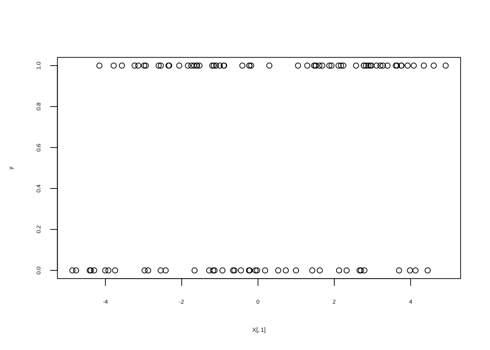
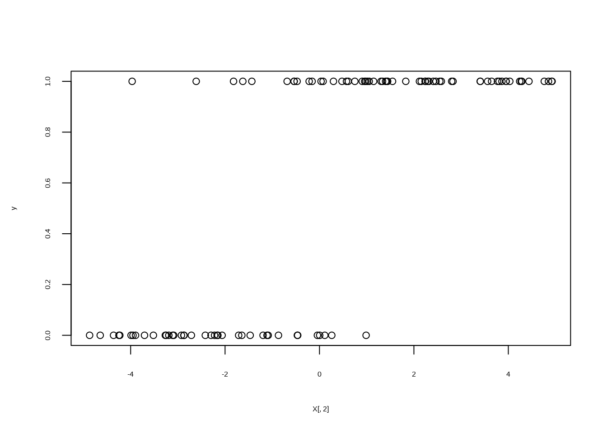
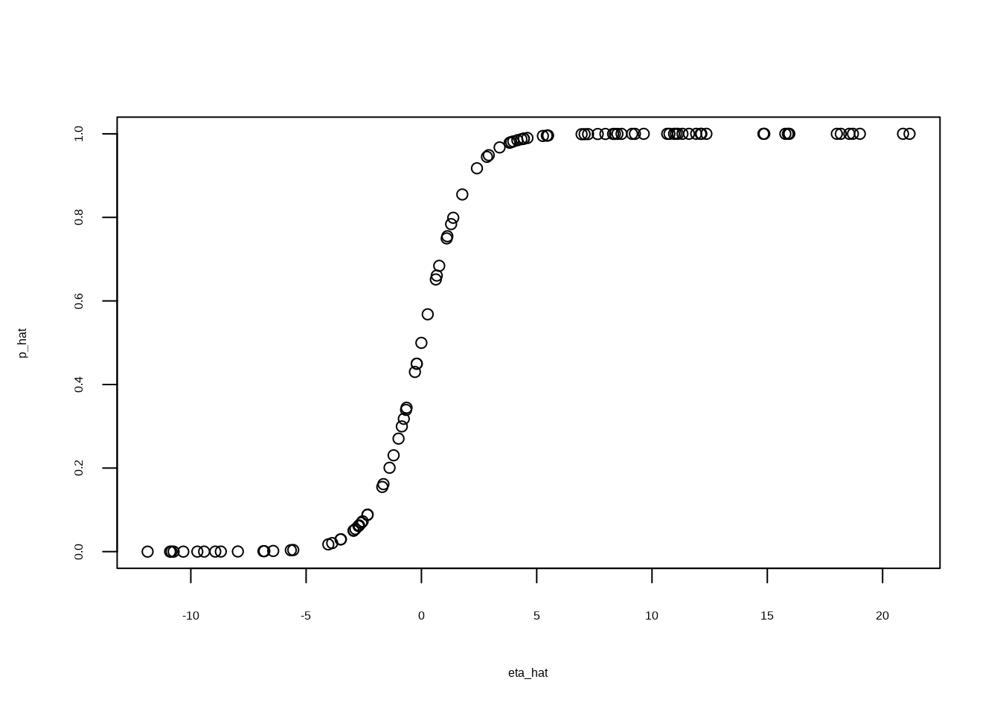
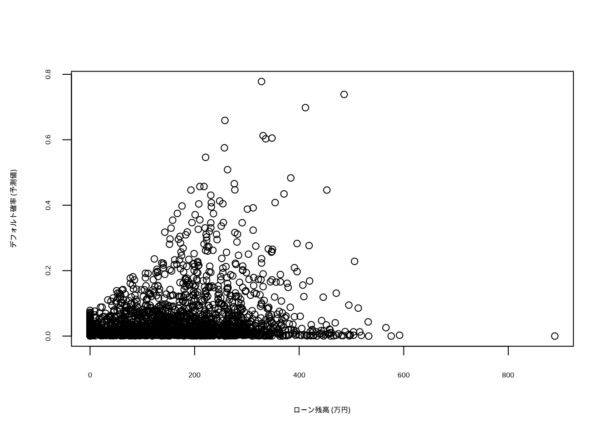
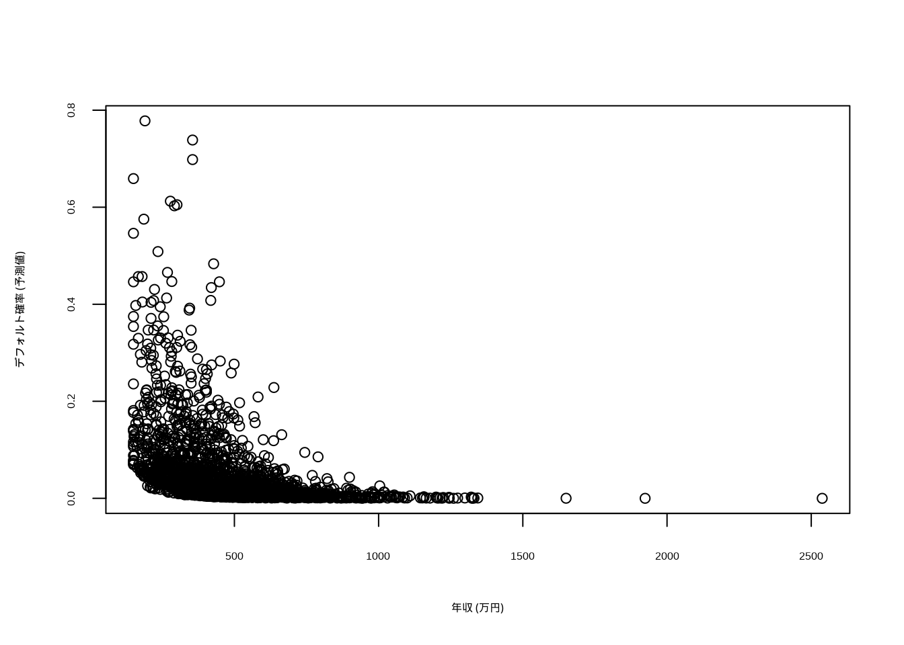

Chapter 4 ロジット/プロビット回帰分析
本章の内容は, 授業の R 演習スクリプト R_logit_dist.R に対応する.
使用するデータは, いずれも授業用に作成した仮想データである.
4.1 ロジット回帰分析の基本操作
ロジットモデル: シミュレーションデータ
基本操作を確認するため,
ロジット回帰モデルが想定するデータ生成メカニズムに従って, 人工データを生成する.
その後, このデータを使って, ロジット回帰分析を行う関数glm()を実行し,
真の係数の値が推定できることを確認する.
シミュレーションデータの生成
set.seed(1)
n <- 100
p <- 2
a <- 1.2
b <- c(0.5, 1.5) # 真の切片と係数
X <- matrix(runif(n * p, -5, 5), ncol = p) # 予測変数 (X1, X2)
colnames(X) <- paste0("X", 1:p)
eta <- a + X %*% b # 線形予測子
prob <- exp(eta)/(1 + exp(eta)) # ロジスティック変換 → 発生確率
y <- rbinom(n, 1, prob) # 0/1 の発生 (ランダム)
plot(X[, 1], y)

ロジット回帰分析の実行
ロジット回帰分析は, R関数glm()を用いて実行することができる.
glm()は標準パッケージstatsに含まれているため,
あらたなインストール作業は不要である.
glm()を用いた分析の操作手順や出力結果の読み方は,
おおむねlm()を踏襲すれば良い.
glm()に与えるモデル式 (引数formula) の書き方は
lm()と同様である. それに加えて, glm()では,
引数familyによって, 目的変数が従うと想定する確率分布を指定する.
ロジット回帰/プロビット回帰では, binomial (二項分布) を指定する.
また, lm()と同様に, glm()の出力結果に対して
summary()関数を適用することで, 推定結果が出力される.
# ロジット回帰
res_glm <- glm(y ~ X, family = binomial)
summary(res_glm) # 推定値を真の値 (1.2, 0.5, 1.5) と比べよ
#>
#> Call:
#> glm(formula = y ~ X, family = binomial)
#>
#> Coefficients:
#> Estimate Std. Error z value Pr(>|z|)
#> (Intercept) 2.5815 0.8647 2.985 0.002831 **
#> XX1 1.1494 0.3434 3.347 0.000818 ***
#> XX2 2.7630 0.7509 3.680 0.000233 ***
#> ---
#> Signif. codes: 0 '***' 0.001 '**' 0.01 '*' 0.05 '.' 0.1 ' ' 1
#>
#> (Dispersion parameter for binomial family taken to be 1)
#>
#> Null deviance: 133.750 on 99 degrees of freedom
#> Residual deviance: 34.478 on 97 degrees of freedom
#> AIC: 40.478
#>
#> Number of Fisher Scoring iterations: 8summary()の出力結果のlm()との主な違いは,
個別の回帰係数の有意性を見る指標が,
lm()では\(t\)値であったところが glm()では\(z\)値になっている点
(それに伴い, 付随する\(p\)値の表記も変化),
および, 全体の当てはまりの指標について,
lm()のように\(R^2\), 補正\(R^2\)の値が表示されておらず,
その代わりに, “Null deviance” (切片のみのモデルの逸脱度), “Residual deviance” (残差逸脱度) が表示されている点である.
(内挿) 予測
glm()の出力結果を関数predict()に与えることで,
内挿予測 (適合値の算出) を行うことができる.
注意点として, 引数typeを指定しない場合 (デフォルト設定) には,
“線形予測子”\(\eta=\beta_0 + \beta_1 x_1 + \cdots + \beta_k x_k\)の予測値が出力される.
ロジット回帰では, これは対数オッズである.
関数predict():
- 予測値を返す関数
- 引数typeの選択肢: "link"(デフォルト), "response", "terms"
- "link": 線形予測子のスケールにおける予測
- "response": 目的変数のスケールにおける予測 (ロジット回帰では確率)
- "terms": 線形予測子のスケールにおける, モデル式の各項の適合値を格納した行列を返すロジット回帰において, 確率の予測を得たい場合には,
type = "response"と指定する必要がある.
# 予測 (内挿)
eta_hat <- predict(res_glm) # 対数オッズ (線形予測子)
p_hat <- predict(res_glm, type = "response") # 確率
head(data.frame(y, p_hat))
#> y p_hat
#> 1 1 0.9846543
#> 2 0 0.0500027
#> 3 0 0.0507452
#> 4 1 1.0000000
#> 5 1 0.9448650
#> 6 0 0.3178520
plot(eta_hat, p_hat) # ロジスティック曲線
以下のように, 線形予測子の予測値に対して, ロジスティック変換 (リンク関数\(g(\cdot)\)の逆関数)
を適用すると, 確率の予測値p_hatと一致することが確認される.
4.2 データ分析例
データ1: 社債デフォルト・データ (集計データ, 仮想)
社債の発行体を, 格付・業種・規模の組合せで8グループに分け, グループごとに発行体数と, 5年以内にデフォルトした発行体数を集計したデータである.
- bond_default.csv, 8行 (格付 × 業種 × 規模 の組合せごとの集計)
- rating: 格付 (IG: 投資適格 BBB 以上, HY: 投機的等級 BB 以下)
- industry: 業種 (manuf: 製造業, nonmanuf: 非製造業)
- size: 発行体の規模 (L: 大企業, S: 中堅・中小)
- n_firm: 発行体数 (社)
- n_default: 5年以内にデフォルトした発行体数 (社)データ読み込み
bond <- read.csv("class/bond_default.csv")
bond
#> rating industry size n_firm n_default
#> 1 IG manuf L 180 1
#> 2 HY manuf L 60 6
#> 3 IG nonmanuf L 150 4
#> 4 HY nonmanuf L 45 10
#> 5 IG manuf S 90 1
#> 6 HY manuf S 70 26
#> 7 IG nonmanuf S 80 3
#> 8 HY nonmanuf S 55 19質的変数は, 関数factor()で因子型に変換し, 基準水準 (ベースライン) を引数levelsの先頭で明示的に指定しておく (前章の「関数factor()について」も参照).
ここでは, 投資適格 (IG), 製造業 (manuf), 大企業 (L) を基準とする.
ロジット回帰の実行
ロジット回帰の実行の際, 目的変数として,
glm()へは異なるデータ形式を与えることができる.
まず, 目的変数のデータ形式として, “成功 (ここではデフォルト) 回数”, “失敗 (非デフォルト) 回数” の2列を持つ行列を, モデル式の左辺に与える例である.
# データ形式 - 1: '成功 (デフォルト) 回数', '失敗 (非デフォルト) 回数' の2列
res_glm1 <- glm(cbind(n_default, n_firm - n_default) ~ rating + industry + size,
family = binomial, data = bond)
summary(res_glm1)
#>
#> Call:
#> glm(formula = cbind(n_default, n_firm - n_default) ~ rating +
#> industry + size, family = binomial, data = bond)
#>
#> Coefficients:
#> Estimate Std. Error z value Pr(>|z|)
#> (Intercept) -4.6685 0.4099 -11.389 < 2e-16 ***
#> ratingHY 2.8542 0.3721 7.671 1.71e-14 ***
#> industrynonmanuf 0.4052 0.2799 1.448 0.147624
#> sizeS 1.0112 0.2931 3.450 0.000561 ***
#> ---
#> Signif. codes: 0 '***' 0.001 '**' 0.01 '*' 0.05 '.' 0.1 ' ' 1
#>
#> (Dispersion parameter for binomial family taken to be 1)
#>
#> Null deviance: 125.5089 on 7 degrees of freedom
#> Residual deviance: 5.6672 on 4 degrees of freedom
#> AIC: 40.311
#>
#> Number of Fisher Scoring iterations: 4
exp(coef(res_glm1)) # オッズ比
#> (Intercept) ratingHY industrynonmanuf sizeS
#> 0.009386209 17.360394179 1.499668777 2.748960504回帰係数を指数変換した値 \(e^{\beta_j}\) は, オッズ比を表す.
例えば, ratingHYの係数 2.854 より,
\(e^{2.854} \approx 17.4\) となり,
業種と規模が同じであれば, 投機的等級 (HY) の発行体のデフォルトのオッズは, 投資適格 (IG) の約17倍である.
同様に, 中堅・中小 (S) のオッズは, 大企業 (L) の約2.7倍である.
一方, 業種 (industrynonmanuf) の係数は有意ではない.
線形回帰分析の時と同様,
二つのモデルの間に包含関係 (ネスト, “nested”) がある場合には,
関数anova()を適用することで,
追加された項が (まとめて) 有意かどうかを評価することができる.
glm()の場合は, 逸脱度 (deviance) の差を用いた尤度比検定 (カイ2乗検定) を行うため, 引数test = "Chisq" (または "LRT") を指定する.
res_glm2 <- glm(cbind(n_default, n_firm - n_default) ~ rating + size, family = binomial,
data = bond)
summary(res_glm2)
#>
#> Call:
#> glm(formula = cbind(n_default, n_firm - n_default) ~ rating +
#> size, family = binomial, data = bond)
#>
#> Coefficients:
#> Estimate Std. Error z value Pr(>|z|)
#> (Intercept) -4.4602 0.3769 -11.835 < 2e-16 ***
#> ratingHY 2.8321 0.3711 7.632 2.3e-14 ***
#> sizeS 1.0099 0.2922 3.456 0.000549 ***
#> ---
#> Signif. codes: 0 '***' 0.001 '**' 0.01 '*' 0.05 '.' 0.1 ' ' 1
#>
#> (Dispersion parameter for binomial family taken to be 1)
#>
#> Null deviance: 125.5089 on 7 degrees of freedom
#> Residual deviance: 7.7684 on 5 degrees of freedom
#> AIC: 40.412
#>
#> Number of Fisher Scoring iterations: 5
res_glm0 <- glm(cbind(n_default, n_firm - n_default) ~ 1, family = binomial, data = bond) # 切片項のみ (null model)
anova(res_glm1, test = "Chisq") # 逐次的な尤度比検定 (test = 'LRT' でも可)
#> Analysis of Deviance Table
#>
#> Model: binomial, link: logit
#>
#> Response: cbind(n_default, n_firm - n_default)
#>
#> Terms added sequentially (first to last)
#>
#>
#> Df Deviance Resid. Df Resid. Dev Pr(>Chi)
#> NULL 7 125.509
#> rating 1 105.065 6 20.444 < 2.2e-16 ***
#> industry 1 2.146 5 18.298 0.1429320
#> size 1 12.630 4 5.667 0.0003795 ***
#> ---
#> Signif. codes: 0 '***' 0.001 '**' 0.01 '*' 0.05 '.' 0.1 ' ' 1
anova(res_glm2, res_glm1, test = "Chisq") # 業種を加える意味はあるか?
#> Analysis of Deviance Table
#>
#> Model 1: cbind(n_default, n_firm - n_default) ~ rating + size
#> Model 2: cbind(n_default, n_firm - n_default) ~ rating + industry + size
#> Resid. Df Resid. Dev Df Deviance Pr(>Chi)
#> 1 5 7.7684
#> 2 4 5.6672 1 2.1012 0.1472
anova(res_glm0, res_glm2, test = "Chisq") # モデル全体の有意性
#> Analysis of Deviance Table
#>
#> Model 1: cbind(n_default, n_firm - n_default) ~ 1
#> Model 2: cbind(n_default, n_firm - n_default) ~ rating + size
#> Resid. Df Resid. Dev Df Deviance Pr(>Chi)
#> 1 7 125.509
#> 2 5 7.768 2 117.74 < 2.2e-16 ***
#> ---
#> Signif. codes: 0 '***' 0.001 '**' 0.01 '*' 0.05 '.' 0.1 ' ' 1anova(res_glm2, res_glm1, test = "Chisq")の結果より,
業種を加える (自由度1を使う) ことによる残差逸脱度の減少は 2.1 と小さく,
\(p\)値は 0.147 であり, 有意水準10%でも有意ではない.
一方, 切片のみのモデルと格付・規模の2変数のモデルを比べると,
2変数を加える (自由度2を使う) ことで, 残差逸脱度が 125.5 から 7.8 へと大きく減少し, \(p\)値は極めて小さい.
すなわち, 格付と規模はデフォルトの発生をよく説明している.
目的変数のデータ形式として, 上とは別の形式として, “成功率”を”試行回数” (引数weights) と共にglm()に与える例を次に示す. 結果はres_glm1と同じになる.
# データ形式 - 2: '成功率' + 重み (件数) の指定
bond$rate <- bond$n_default/bond$n_firm
res_glm1_2 <- glm(rate ~ rating + industry + size, family = binomial, weights = n_firm,
data = bond)
summary(res_glm1_2)
#>
#> Call:
#> glm(formula = rate ~ rating + industry + size, family = binomial,
#> data = bond, weights = n_firm)
#>
#> Coefficients:
#> Estimate Std. Error z value Pr(>|z|)
#> (Intercept) -4.6685 0.4099 -11.389 < 2e-16 ***
#> ratingHY 2.8542 0.3721 7.671 1.71e-14 ***
#> industrynonmanuf 0.4052 0.2799 1.448 0.147624
#> sizeS 1.0112 0.2931 3.450 0.000561 ***
#> ---
#> Signif. codes: 0 '***' 0.001 '**' 0.01 '*' 0.05 '.' 0.1 ' ' 1
#>
#> (Dispersion parameter for binomial family taken to be 1)
#>
#> Null deviance: 125.5089 on 7 degrees of freedom
#> Residual deviance: 5.6672 on 4 degrees of freedom
#> AIC: 40.311
#>
#> Number of Fisher Scoring iterations: 4プロビット回帰
プロビット回帰については,
glm()の引数をfamily = binomial(link = "probit")と指定すれば, あとは
ロジット回帰と同様に実行できる.
# プロビット回帰
res_glm1_p <- glm(cbind(n_default, n_firm - n_default) ~ rating + industry + size,
family = binomial(link = "probit"), data = bond)
summary(res_glm1_p)
#>
#> Call:
#> glm(formula = cbind(n_default, n_firm - n_default) ~ rating +
#> industry + size, family = binomial(link = "probit"), data = bond)
#>
#> Coefficients:
#> Estimate Std. Error z value Pr(>|z|)
#> (Intercept) -2.4723 0.1856 -13.324 < 2e-16 ***
#> ratingHY 1.4185 0.1658 8.554 < 2e-16 ***
#> industrynonmanuf 0.2642 0.1521 1.737 0.082361 .
#> sizeS 0.5187 0.1541 3.366 0.000764 ***
#> ---
#> Signif. codes: 0 '***' 0.001 '**' 0.01 '*' 0.05 '.' 0.1 ' ' 1
#>
#> (Dispersion parameter for binomial family taken to be 1)
#>
#> Null deviance: 125.509 on 7 degrees of freedom
#> Residual deviance: 6.077 on 4 degrees of freedom
#> AIC: 40.72
#>
#> Number of Fisher Scoring iterations: 5ロジット回帰とプロビット回帰の結果を並べて比べてみる.
# ratio: 係数の比 (ロジット / プロビット), p_logit, p_probit: 各モデルのp値
cbind(ratio = coef(res_glm1)/coef(res_glm1_p), p_logit = summary(res_glm1)$coefficients[,
"Pr(>|z|)"], p_probit = summary(res_glm1_p)$coefficients[, "Pr(>|z|)"])
#> ratio p_logit p_probit
#> (Intercept) 1.888315 4.724508e-30 1.676375e-40
#> ratingHY 2.012170 1.710860e-14 1.193606e-17
#> industrynonmanuf 1.534118 1.476235e-01 8.236084e-02
#> sizeS 1.949561 5.607508e-04 7.638836e-04ロジット回帰とプロビット回帰では, 係数の大きさ (尺度) が異なる. 目安として, ロジットの係数はプロビットの係数のおよそ1.6〜1.8倍になると言われるが, このデータでは1.5〜2.0倍であり, 目安より大きいものがある.
投資適格 (IG) の発行体のデフォルト率は数%と低く, 発生確率が0に近い領域 (分布の裾) でロジスティック分布と正規分布の形の違いが表れるためである.
一方, 予測される確率は両者でほとんど変わらず (後述), 係数の符号や有意性の判断も変わらないことが多い.
ただし, 業種 (industrynonmanuf) の\(p\)値は, ロジット回帰では0.148, プロビット回帰では0.082であり,
有意水準5%ではどちらも有意ではないが, 有意水準10%では判断が分かれる.
このように, \(p\)値が有意水準の境目に近い場合には, モデルの選び方によって結論が変わり得ることに注意したい.
(内挿) 予測
関数predict()を用いて予測値を出力するが, 上述のように引数typeを指定しない場合には,
線形予測子のスケールでの予測を返す. 具体的には, ロジット回帰では対数オッズを,
プロビット回帰では標準正規分布の分位点 (分位点関数は累積分布関数の逆関数) を返す.
一方, type = "response"とした場合には, どちらのモデルにおいても, 目的変数のスケール,
すなわち, 確率の予測値を返す.
# 予測 (ロジット回帰)
predict(res_glm1) # 対数オッズ (∵ ロジット回帰)
#> 1 2 3 4 5 6 7
#> -4.6685137 -1.8143223 -4.2632695 -1.4090781 -3.6572909 -0.8030995 -3.2520466
#> 8
#> -0.3978552
p_hat <- predict(res_glm1, type = "response") # デフォルト確率
predict(res_glm1, type = "terms") # 線形予測子の項ごとの寄与
#> rating industry size
#> 1 -1.427096 -0.2026221 -0.5056114
#> 2 1.427096 -0.2026221 -0.5056114
#> 3 -1.427096 0.2026221 -0.5056114
#> 4 1.427096 0.2026221 -0.5056114
#> 5 -1.427096 -0.2026221 0.5056114
#> 6 1.427096 -0.2026221 0.5056114
#> 7 -1.427096 0.2026221 0.5056114
#> 8 1.427096 0.2026221 0.5056114
#> attr(,"constant")
#> [1] -2.533184# 予測 (プロビット回帰)
predict(res_glm1_p) # 標準正規分布の分位点 (∵ プロビット回帰)
#> 1 2 3 4 5 6 7
#> -2.4723172 -1.0538525 -2.2081626 -0.7896979 -1.9536245 -0.5351598 -1.6894700
#> 8
#> -0.2710053
p_hat_p <- predict(res_glm1_p, type = "response") # デフォルト確率
# 予測値の比較: 実績 vs ロジット vs プロビット
data.frame(bond[, 1:3], actual = round(bond$rate, 3), logit = round(p_hat, 3), probit = round(p_hat_p,
3))
#> rating industry size actual logit probit
#> 1 IG manuf L 0.006 0.009 0.007
#> 2 HY manuf L 0.100 0.140 0.146
#> 3 IG nonmanuf L 0.027 0.014 0.014
#> 4 HY nonmanuf L 0.222 0.196 0.215
#> 5 IG manuf S 0.011 0.025 0.025
#> 6 HY manuf S 0.371 0.309 0.296
#> 7 IG nonmanuf S 0.038 0.037 0.046
#> 8 HY nonmanuf S 0.345 0.402 0.393係数の信頼区間
# 信頼区間
confint(res_glm1) # 回帰係数の95%信頼区間
#> 2.5 % 97.5 %
#> (Intercept) -5.540733 -3.9237757
#> ratingHY 2.173439 3.6485357
#> industrynonmanuf -0.142920 0.9574943
#> sizeS 0.447711 1.6015954
exp(confint(res_glm1)) # オッズ比の95%信頼区間
#> 2.5 % 97.5 %
#> (Intercept) 0.003923651 0.01976632
#> ratingHY 8.788458797 38.41836785
#> industrynonmanuf 0.866823442 2.60516042
#> sizeS 1.564726386 4.96094105オッズ比の信頼区間は, 回帰係数の信頼区間の両端を指数変換して求める. オッズ比の信頼区間が1を含むかどうかが, 係数がゼロかどうかの判断に対応する.
(自主課題)
bond_default.csvに対するロジット回帰分析の結果を解釈してみよう.
データ2: 個人向けローンのデフォルト・データ (仮想)
- loan_default.csv, 2,000件
- default: デフォルト (1: あり, 0: なし)
- balance: ローン残高 (万円)
- income: 年収 (万円)
- age: 年齢 (歳)
- employ: 雇用形態 (regular: 正社員, nonregular: 非正規)データ読み込み
loan <- read.csv("class/loan_default.csv")
loan$employ <- factor(loan$employ, levels = c("regular", "nonregular"))
summary(loan)
#> default balance income age
#> Min. :0.000 Min. : 0.0 Min. : 150.0 Min. :22.00
#> 1st Qu.:0.000 1st Qu.: 82.0 1st Qu.: 327.0 1st Qu.:35.00
#> Median :0.000 Median :168.0 Median : 449.5 Median :43.00
#> Mean :0.055 Mean :171.8 Mean : 482.0 Mean :42.54
#> 3rd Qu.:0.000 3rd Qu.:246.0 3rd Qu.: 587.0 3rd Qu.:50.00
#> Max. :1.000 Max. :889.0 Max. :2538.0 Max. :70.00
#> employ
#> regular :1382
#> nonregular: 618
#>
#>
#>
#>
mean(loan$default) # デフォルト率
#> [1] 0.055データ1と異なり, 1行が1件 (1人) に対応し, 目的変数defaultは 0/1 の値をとる.
この場合は, 目的変数をそのままモデル式の左辺に与えれば良い.
ロジット回帰
# ロジット回帰
res_glm <- glm(default ~ balance + income + age + employ, family = binomial, data = loan)
summary(res_glm)
#>
#> Call:
#> glm(formula = default ~ balance + income + age + employ, family = binomial,
#> data = loan)
#>
#> Coefficients:
#> Estimate Std. Error z value Pr(>|z|)
#> (Intercept) -1.725859 0.597229 -2.890 0.00386 **
#> balance 0.012482 0.001304 9.571 < 2e-16 ***
#> income -0.008557 0.001031 -8.303 < 2e-16 ***
#> age -0.005759 0.010163 -0.567 0.57094
#> employnonregular 0.672369 0.252127 2.667 0.00766 **
#> ---
#> Signif. codes: 0 '***' 0.001 '**' 0.01 '*' 0.05 '.' 0.1 ' ' 1
#>
#> (Dispersion parameter for binomial family taken to be 1)
#>
#> Null deviance: 851.93 on 1999 degrees of freedom
#> Residual deviance: 673.46 on 1995 degrees of freedom
#> AIC: 683.46
#>
#> Number of Fisher Scoring iterations: 7
exp(coef(res_glm)) # オッズ比
#> (Intercept) balance income age
#> 0.1780201 1.0125607 0.9914797 0.9942576
#> employnonregular
#> 1.9588722量的変数の係数 \(b\) は, その変数が1単位増えたときの対数オッズの変化を表す.
例えば, balanceの係数から, ローン残高が1万円増えるとデフォルトのオッズは \(e^{b}\) 倍になる.
1万円では変化が小さいので, 100万円増えたときを計算すると, \(e^{100b}\) 倍となる.
すなわち, 他の変数が同じであれば, 残高が100万円多いと, デフォルトのオッズは約3.5倍になる.
また, 非正規雇用 (employnonregular) のオッズは, 正社員の約2.0倍である.
年齢 (age) は有意ではない.
plot(loan$balance, predict(res_glm, type = "response"), xlab = "ローン残高 (万円)",
ylab = "デフォルト確率 (予測値)")

プロビット回帰
# プロビット回帰
res_glm_p <- glm(default ~ balance + income + age + employ, family = binomial(link = "probit"),
data = loan)
summary(res_glm_p)
#>
#> Call:
#> glm(formula = default ~ balance + income + age + employ, family = binomial(link = "probit"),
#> data = loan)
#>
#> Coefficients:
#> Estimate Std. Error z value Pr(>|z|)
#> (Intercept) -1.2058849 0.2878866 -4.189 2.8e-05 ***
#> balance 0.0059126 0.0006439 9.182 < 2e-16 ***
#> income -0.0037323 0.0004739 -7.875 3.4e-15 ***
#> age -0.0016311 0.0049769 -0.328 0.74311
#> employnonregular 0.3692888 0.1228679 3.006 0.00265 **
#> ---
#> Signif. codes: 0 '***' 0.001 '**' 0.01 '*' 0.05 '.' 0.1 ' ' 1
#>
#> (Dispersion parameter for binomial family taken to be 1)
#>
#> Null deviance: 851.93 on 1999 degrees of freedom
#> Residual deviance: 682.52 on 1995 degrees of freedom
#> AIC: 692.52
#>
#> Number of Fisher Scoring iterations: 7(参考) 線形確率モデルとの比較
0/1 の目的変数に対して, lm()で線形回帰を当てはめる方法 (線形確率モデル) もある.
しかし, 予測値が0〜1の範囲に収まる保証はなく, 確率としては解釈できない値が出てしまう.
(外挿) 予測
新しいデータ (例えば, 新しいローンの申込者) に対して予測を行いたい場合には, 関数predict()に対して,
glm()の出力と共に, 予測を行いたい説明変数の値の組をデータフレームとして,
引数newdataに与えれば良い.
# 予測 (新しい申込者に対して)
newdat <- data.frame(balance = c(100, 200, 300, 400), income = 400, age = 35, employ = "nonregular")
predict(res_glm, newdata = newdat, type = "response") # デフォルト確率
#> 1 2 3 4
#> 0.03138581 0.10144539 0.28231177 0.57815898年収400万円・35歳・非正規雇用の申込者では, 残高が100万円から400万円に増えると, 予測デフォルト確率は約3%から約58%へと, 非線形に (ロジスティック曲線に沿って) 上昇する.
便利なツール: パッケージepiDisplay
オッズ比とその信頼区間を一覧表示する.
# install.packages('epiDisplay')
library(epiDisplay)
logistic.display(res_glm, simplified = TRUE)
#>
#> OR lower95ci upper95ci Pr(>|Z|)
#> balance 1.0125607 1.0099757 1.0151523 1.059487e-21
#> income 0.9914797 0.9894792 0.9934843 1.011750e-16
#> age 0.9942576 0.9746495 1.0142602 5.709352e-01
#> employnonregular 1.9588722 1.1950754 3.2108267 7.657998e-03(自主課題)
loan_default.csvに対するロジット回帰分析の結果を解釈してみよう.ageを除いたモデルと比較し,anova()で尤度比検定を行ってみよう.
4.3 オッズ比と相対リスク
ロジット回帰の係数を指数変換した値はオッズ比であるが, 実務では「リスク (発生確率) が何倍になるか」を知りたいことが多い. 両者の関係を整理しておく.
2値の要因 \(X\) (例: 格付が HY なら1, IG なら0) と, 2値の結果 \(Y\) (デフォルトなら1) について, 次の2×2の表を考える.
| \(Y=1\) (デフォルト) | \(Y=0\) (非デフォルト) | 計 | |
|---|---|---|---|
| \(X=1\) (HY) | \(A\) | \(B\) | \(A+B\) |
| \(X=0\) (IG) | \(C\) | \(D\) | \(C+D\) |
- 相対リスク (リスク比, relative risk, RR): 要因がある場合のリスク (発生確率) は, ない場合の何倍か \[ RR = \frac{P[Y=1 \mid X=1]}{P[Y=1 \mid X=0]} = \frac{A/(A+B)}{C/(C+D)} \]
- オッズ比 (odds ratio, OR): 要因がある場合のオッズは, ない場合の何倍か \[ OR = \frac{P[Y=1 \mid X=1]/P[Y=0 \mid X=1]}{P[Y=1 \mid X=0]/P[Y=0 \mid X=0]} = \frac{A/B}{C/D} = \frac{A \times D}{B \times C} \]
発生が稀な場合 (\(A \ll B\), \(C \ll D\), すなわち \(A + B \approx B\), \(C + D \approx D\)) には, \(RR \approx OR\) となる. すなわち, 発生確率が小さいときは, オッズ比 (ロジット回帰の \(e^{\beta}\)) で相対リスクを近似できる. 一方, 発生確率が大きいときは, オッズ比は相対リスクより (1から離れる方向に) 大きく出るので, 「リスクが \(e^{\beta}\) 倍」と読むと過大評価になる.
社債デフォルト・データで, 格付ごとに集計して確かめてみる.
tab <- aggregate(cbind(n_default, n_firm) ~ rating, data = bond, FUN = sum)
tab$risk <- tab$n_default/tab$n_firm # リスク (デフォルト率)
tab$odds <- tab$n_default/(tab$n_firm - tab$n_default)
tab
#> rating n_default n_firm risk odds
#> 1 IG 9 500 0.0180000 0.01832994
#> 2 HY 61 230 0.2652174 0.36094675
c(RR = tab$risk[2]/tab$risk[1], OR = tab$odds[2]/tab$odds[1])
#> RR OR
#> 14.73430 19.69165HY のデフォルト率は2割を超え「稀」とは言えないため, オッズ比は相対リスクをかなり上回る. これに対して, 個人ローン・データ (デフォルト率は全体で約5%, 非正規雇用でも約11%) では, 雇用形態についてのオッズ比と相対リスクは比較的近い値になる.
tab2 <- table(employ = loan$employ, default = loan$default)
tab2
#> default
#> employ 0 1
#> regular 1340 42
#> nonregular 550 68
risk <- tab2[, "1"]/rowSums(tab2)
odds <- tab2[, "1"]/tab2[, "0"]
c(RR = unname(risk[2]/risk[1]), OR = unname(odds[2]/odds[1]))
#> RR OR
#> 3.620589 3.944589(参考) オッズ比が便利な理由の一つは, データの集め方によらず推定できる点にある. 例えば, デフォルト企業と非デフォルト企業を別々に (結果 \(Y\) で層別して) 集めたデータ (疫学でいう「ケース・コントロール研究」, 後ろ向き研究) では, \(P[Y=1 \mid X]\) (リスク) は推定できないが, オッズ比は推定できる. また, リスクの差 \(P[Y=1 \mid X=1]-P[Y=1 \mid X=0]\) は寄与リスクと呼ばれる.
4.4 疑似R2の計算
線形回帰の場合と異なり, ロジット回帰では, \(R^2\)は計算されない. しかし, ロジット回帰 (より一般に, 一般化線形モデル) においては, 疑似的に\(R^2\)を計算する方法が 複数提案されている.
以下では, 個人ローン・データのロジット回帰モデルres_glmについて, 3つのパッケージDescTools, pscl, performanceを使用した例を紹介する.
パッケージDescToolsの利用
DescTools::PseudoR2()
- usage: PseudoR2(x, which = NULL)
- which: 計算したい疑似R2.
選択肢: "McFadden"(デフォルト), "McFaddenAdj", "CoxSnell", "Nagelkerke", "AldrichNelson", "VeallZimmermann", "Efron", "McKelveyZavoina", "Tjur", "all".# install.packages('DescTools')
library(DescTools)
PseudoR2(res_glm) # McFadden (デフォルト)
#> McFadden
#> 0.2094853
PseudoR2(res_glm, which = "CoxSnell") # Cox-Snell
#> CoxSnell
#> 0.08536783
PseudoR2(res_glm, which = "Nagelkerke") # Nagelkerke
#> Nagelkerke
#> 0.2461158
PseudoR2(res_glm, which = "all")
#> McFadden McFaddenAdj CoxSnell Nagelkerke AldrichNelson
#> 0.20948533 0.19774726 0.08536783 0.24611581 0.08192303
#> VeallZimmermann Efron McKelveyZavoina Tjur AIC
#> 0.27424669 0.16250350 0.42480093 0.14876231 683.46220597
#> BIC logLik logLik0 G2
#> 711.46671827 -336.73110299 -425.96439463 178.46658328疑似\(R^2\)は, 方法により相当異なることが確認される. したがって, 線形回帰の\(R^2\)のように「何%を説明している」とは解釈せず, 同じ指標で複数のモデルを比較する目的で使うのが良い.
代表的な指標の一つである McFadden の疑似\(R^2\)は, モデルの対数尤度 \(\log L\) と, 切片のみのモデルの対数尤度 \(\log L_0\) を用いて, \[ R^2_{\text{McFadden}} = 1 - \frac{\log L}{\log L_0} \] と定義される. 直接計算して確かめておく.
パッケージpsclの利用
pscl::pR2()
- 以下を出力:
- llh: The log-likelihood from the fitted model
- llhNull: The log-likelihood from the intercept-only restricted model
- G2: Minus two times the difference in the log-likelihoods
- McFadden: McFadden's pseudo r-squared
- r2ML: Maximum likelihood pseudo r-squared (Cox-Snell に対応)
- r2CU: Cragg and Uhler's pseudo r-squared (Nagelkerke に対応)パッケージperformanceの利用
performance::r2()
- モデルに応じて適切な疑似R2を選んで出力:
- Logistic models: Tjur's R2
- General linear models: Nagelkerke's R2
- Multinomial Logit: McFadden's R2
- Models with zero-inflation: R2 for zero-inflated models
- Mixed models: Nakagawa's R2
- Bayesian models: R2 bayes(参考) 疑似R2の使い分け
どの疑似\(R^2\)を使うべきかについて, 決まった正解はない. ここでは, 実務上の目安として, よく使われる指標の特徴をまとめておく.
- McFadden: 対数尤度に基づく基本的な指標である. 例えば統計ソフト Stata のロジット回帰の出力に “Pseudo R2” として表示されるなど, 計量経済学の分野で広く使われている. 線形回帰の\(R^2\)と比べて小さめの値になりやすく, 0.2〜0.4程度でも当てはまりは良好とする目安 (McFadden, 1979) が知られている.
- Cox-Snell と Nagelkerke: 統計ソフト SPSS のロジスティック回帰の出力に表示されるため, SPSS がよく使われる分野 (医学・心理学など) の論文でよく見かける. Cox-Snell は最大値が1に届かないという欠点があり, Nagelkerke はそれを最大値が1になるよう補正したものである.
- McKelvey-Zavoina: 0/1 の目的変数の背後に連続的な潜在変数を想定し, その潜在変数に対する線形回帰の\(R^2\)を推定する指標である. シミュレーション研究では, 潜在変数モデルの想定が正しい場合に, 潜在変数を直接観測できたときの (OLS の)\(R^2\)に近い値を与えると報告されている (Windmeijer, 1995; Veall and Zimmermann, 1996). ただし, この性質は潜在変数モデルの想定に依存する.
- Tjur: 「\(Y=1\) の個体の予測確率の平均」から「\(Y=0\) の個体の予測確率の平均」を引いたもので, 二つのグループをどれだけ予測確率で区別できているかを表す. 定義が直感的に分かりやすく, パッケージperformanceの
r2()がロジット回帰に対して既定で出力するのもこの指標である.
上の個人ローン・データの例でも, McFadden は0.21, Nagelkerke は0.25, McKelvey-Zavoina は0.42, Tjur は0.15と, 指標によって値が大きく異なる. したがって, 実務では次の点に注意すると良い.
- どの指標を使ったかを必ず明記する. 異なる指標の値どうしを比べてはいけない.
- 指標の選択に迷う場合は, 報告先の分野やソフトウェアの慣行に合わせる.
- 疑似\(R^2\)は, 線形回帰の\(R^2\)のような「目的変数の分散のうち説明された割合」ではない. 値の絶対的な大きさで良し悪しを判断するよりも, 同じ目的変数・同じデータに対する複数のモデルを, 同じ指標で比較する目的で使うのが適切である.
(参考文献)
- McFadden, D. (1979). Quantitative methods for analysing travel behaviour of individuals: Some recent developments. In D. A. Hensher and P. R. Stopher (Eds.), Behavioural Travel Modelling (pp. 279–318). Croom Helm.
- Tjur, T. (2009). Coefficients of determination in logistic regression models: A new proposal: The coefficient of discrimination. The American Statistician, 63(4), 366–372.
- Veall, M. R. and Zimmermann, K. F. (1996). Pseudo-R2 measures for some common limited dependent variable models. Journal of Economic Surveys, 10(3), 241–259.
- Windmeijer, F. A. G. (1995). Goodness-of-fit measures in binary choice models. Econometric Reviews, 14(1), 101–116.